Acordei, arrumei a bagagem na moto e saí cedo de Cambará do Sul. Queria passar por uma cidade onde houvesse concessionária da Yamaha, para trocar o óleo da moto e fazer uma pequena revisão depois de tanto offroad.
Estava em dúvida entre ir para Caxias do Sul ou Novo Hamburgo. Decidi que iria para Novo Hamburgo, e de lá desceria em direção ao Chuy, rodando até onde conseguisse para pernoitar pelo caminho.
Já deixei a pousada vestido com a roupa de chuva, por causa do frio. E logo na saída da pequeníssima cidade, já deu medo. Em Cambará ainda estava sol, mas olhando no horizonte, na direção que eu seguiria, inúmeros raios cortavam de luz as imensas nuvens de cor preta, que dominavam o céu. Uma tempestade se avizinhava. Restava torcer para não vir ao meu encontro. Antes de ela chegar ainda deu para curtir a estrada, que estava com asfalto bom e curvas divertidas.
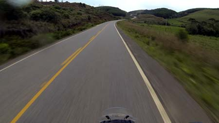Saindo de Cambará do Sul, antes da chuva chegar
Não adiantou torcer, peguei chuva torrencial. E fui pilotando devagar, visibilidade bem ruim, até um ponto da RS-20 onde tinha uma rotatória confusa, com sinalização mal feita. Indicava Caxias do Sul para a direita, mas seguindo em frente ou para a esquerda não havia indicação de Novo Hamburgo.
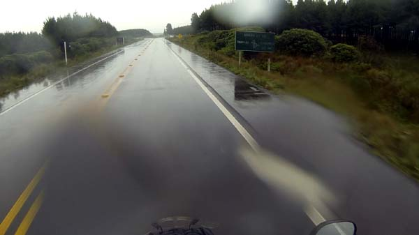Sob chuva, a sinalização não ajudou
Peguei a rota para a esquerda, segui um bom tempo com a estrada no meio de uma densa mata, nenhuma construção, posto de gasolina, fazenda, ou o que seja. Nada. Eu procurava qualquer lugar com cobertura para poder olhar no GPS do celular aonde eu estava, mas a chuva não dava trégua.
Resolvi voltar até a rotatória e seguir na única direção sinalizada, que indicava para Caxias do Sul mesmo. E assim o fiz.
O frio, ventos fortes, e chuva torrencial estavam matando. E além da forte chuva estourando contra a viseira do capacete, e da baixa temperatura externa provocando embaçamento, os buracos espalhados no asfalto davam o tom do desafio. Tive que seguir em velocidade média de 80 Km/h, desviando de verdadeiras crateras. Os caminhões e carros me ultrapassavam em velocidade maior, levantando uma nuvem de água que prejudicava mais ainda a visão.
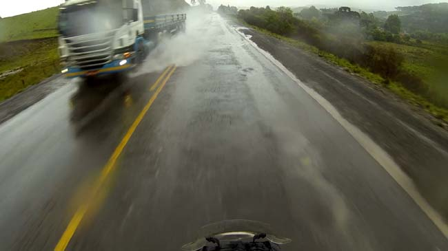O asfalto era só buraco, as poças armadilhas, e caminhões, muitos caminhões
As luvas já encharcadas faziam congelar as mãos, naquele frio com o qual não estou acostumado. Durante 100 Km ou mais pilotei, esperando um lugar para parar e me aquecer um pouco, mas não havia nada na estrada, só mato nas laterais, e muitos buracos na pista. Perigosos buracos escondidos sob poças d’água.
Finalmente cheguei perto da entrada de Caxias do Sul. No primeiro posto de gasolina que vi, parei. Abasteci (2.348 Km rodados), e estava doido para beber um café bem quente. Entrei na loja de conveniência, e recebi a arrasadora notícia de que a máquina de café estava quebrada.
Fiquei ali fazendo hora para esperar o corpo aquecer um pouco, comecei a conversar com uma frentista. Ela ficou espantada de eu estar vindo do Rio de Janeiro, de moto, sozinho, e debaixo daquele temporal. E quando perguntei onde ficava a Yamaha, pois queria fazer uma revisão na moto, ela pensou que eu tinha ido até lá em Caxias do Sul para fazer a tal revisão. Achei graça da ingenuidade dela, e expliquei que estava era viajando, e a revisão era só para evitar problemas. Outro frentista, mais acostumado com viajantes, disse que havia duas Yamahas na cidade agora. Uma era no centro, e ele não me recomendava porque o trânsito estaria complicado. Me indicou outra concessionária, na qual eu chegaria margeando a cidade sem enfrentar trânsito pesado.
“Pega uma reta, vai ver viaduto, não entra, segue mais, vira não sei onde, depois da polícia rodoviária pega a esquerda...” pensei logo como estava ferrado, eu sou um perdido, não iria achar fácil esse lugar.
Mas fui pilotando e lembrando as instruções, mesmo sob chuva intensa, e consegui encontrar a direção. Peguei a avenida indicada, e como não encontrava a Yamaha parei em um posto para perguntar. Os frentistas disseram que não tinha Yamaha nenhuma ali, só Honda, que ficava mais à frente. Já sabendo como tem bisonho nesse mundo, segui mais um pouco. Vi a Honda do lado esquerdo. E bem em frente a ela, do lado direito, uma concessionária da Yamaha (Red Motos) com uma enorme fachada e letreiro. Como não tem?
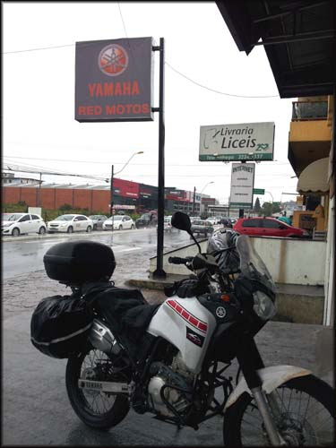Concessionária da Yamaha em Caxias do Sul
Parei em frente, parecia fechada, com as portas de vidro trancadas na frente. Mas logo veio uma menina, abriu as portas e voltou para dentro da loja, sem falar nada comigo. Sem entender o que estava acontecendo, entrei, já me desculpando por molhar o chão, já que eu pingava de tão encharcado. Ela disse que não tinha problema. Depois eu vi que, apesar de ser dentro da loja, as motos para a oficina passavam por ali mesmo e a sujeira que eu estava fazendo com a roupa de chuva pingando era normal.
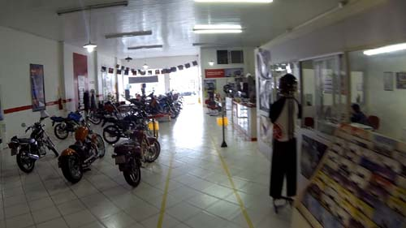A concessionária, aqui eu já saindo de moto após o serviço
Expliquei o que eu queria, e a atendente disse que o mecânico não estava, e iria demorar uns 10 minutos. Ok, eu espero. Fiquei puxando conversa, e a menina ficou mais simpática depois. Ela perguntou se eu tinha vindo do Rio de Janeiro mesmo, de moto. Eu disse que sim, e planejava ir até o Uruguai para passear por lá. Ela disse que acontecia muito do pessoal de SP e RJ enviar as motos para eles de caminhão, e retirar lá na Yamaha, para fazer a mesma viagem. Que sem graça, pensei com meus botões...
Até que chegou o mecânico, e passando por mim de moto, dentro da loja, fez sinal para a menina perguntando o que eu queria. Ela disse "só trocar o óleo". Pronto, já vi que o cara é mal humorado, que saco.
Bom, fazer o que. Fui lá falar com ele, expliquei o que queria, trocar o óleo e limpar o barro que acumulou ali na corrente e pinhão, e nos mecanismos de freio. Falei que estava viajando, etc, que pretendia até ir ao Uruguai. Daí ele perguntou pra onde no Uruguai eu queria ir. Bom, dali eu já nem iria ao Chuy, iria até Rivera, eu disse. Ele pareceu entusiasmado. "Eu sou de Rivera!". Ora, que coincidência, o cara era uruguaio, de Rivera, e trabalhava em Caxias do Sul.
Ele então levou a moto pra área de lava jato e deu um belo trato, finalmente saiu toda aquela lama acumulada na Serra do Corvo Branco, que já estava se transformando em cerâmica rs.
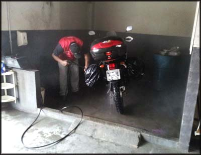Amigo da Yamaha dando uma moral e tirando o barro acumulado na monstrinha
Nisso apareceu um rapaz que tinha deixado uma Ténéré para revisão, e voltara para trazer o manual que tinha esquecido. Ele viu a placa do Rio, e disse "veio de longe hein!". Ficamos conversando, e perguntei logo onde eu poderia comprar uma proteção de lona que o pessoal coloca no guidão naquela região do sul, como a que estava na moto dele, e que depois fui saber que se chama "Charruto".
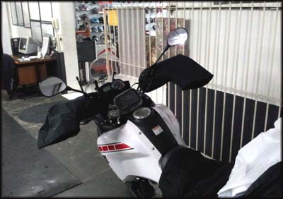"Charruto". Nem sei se escreve assim, mas é acessório indispensável para pilotar no frio e chuva.
Ele disse que em qualquer loja eu compraria por 25 reais, mas que naquela área onde eu estava seria mais caro e talvez não encontrasse. Como tinha visto duas lojas grandes ali perto, disse que iria procurar lá. Ele se ofereceu para me dar uma carona de carro, e como chovia aos baldes eu aceitei a ajuda.
Me deixou em frente a uma das lojas, agradeci a carona e fui ver se tinha. Não tinha. Atravessei a pista para a outra loja, de nome “Over 2 Moto Store”. Um rapaz gente boa veio me atender. Tinha. 30 reais. Eu preciso! Enquanto ele tirava o pedido, comentei que a loja era muito maneira, muitos produtos top de motociclismo, e que no Rio não tinha aquela variedade, só em SP.
Ficamos conversando, ele desacreditando que eu viajara para tão longe sozinho... a cada pessoa impressionada com isso eu me sentia um alienígena, apesar de ter lido vários relatos de viagens parecidas feitas por pessoas sozinhas. Animado, ele disse ainda que por eu ser "de fora" me daria uns brindes, uns adesivos legais da loja e um chaveiro bacana. Obrigado!
Aproveitei para perguntar se havia algum banco Itaú na região, e ele me indicou a direção. Eu já estava há um tempo procurando uma agência do Itaú, nas cidades por onde passei simplesmente não havia, e eu precisava sacar uma grana. Fui procurar o banco sob chuva, vestido com a roupa de chuva de moto, e após andar um monte, achei a bendita agência. A segurança me travou por uns 5 minutos na porta giratória até eu esvaziar todos os bolsos da calça, jaqueta com chaves, alarme, celular, moedas... que inferno, fiquei puto.
Consegui romper a barreira bancária, e retirar meu dinheiro. Com a grana em mão, finalmente, voltei para a Yamaha, para pegar a motoca e instalar o novo acessório, que melhorou minha vida sob frio e chuva em 500%!
O mecânico ainda me deu várias sugestões de trajetos, disse que costuma viajar de moto pela região nos fins de semana, e me sugeriu conhecer Bento Gonçalves. Cidade famosa pelo turismo relacionado às vinícolas locais e origens. Eu realmente não sabia para onde ir, porque a chuva não dava tréguas. Comentei que pretendia começar a descer o mais reto possível em direção a Santana do Livramento, mas não sabia quantos quilômetros conseguiria rodar até escurecer, onde poderia chegar, se haveria hospedagem... no fim acabei convencido de que o mais seguro, no sentido de evitar maiores problemas, seria ir para Bento Gonçalves, que, sendo uma cidade turística, haveria de me receber melhor, pois não estava fácil com tanta chuva.
Paguei o serviço na loja, agradeci as dicas ao novo colega uruguaio, e retomei minha rota molhada. Parei em um posto para beber meu primeiro café do dia na loja de conveniência. Aproveitei para almoçar um desses x-burger de microondas, horrível. E pé na estrada.
Após alguns quilômetros a chuva deu uma trégua, finalmente! Passei por lugares bonitos, podendo voltar a apreciar as paisagens, agora sim eu estava viajando de moto de novo.
Em um trecho peguei um engarrafamento chato, anda e para. Perguntei a uma senhora que dirigia um carro parado ao meu lado no congestionamento, se ali costumava engarrafar assim mesmo, haja vista que era uma rodovia, ou se deveria ser um acidente. Disse ela que deveria ser acidente, mas que às vezes engarrafa de parar também. Observei, não passava motociclista algum... peguei o corredor e fui, com cautela. Na frente, de fato, mais um, das dezenas de acidentes que presenciei na estrada. Desta vez uma van capotada.
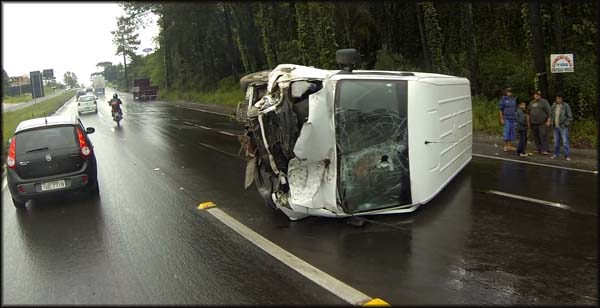Van capotada, acho que o motorista estava sem cinto de segurança
Passei batido, e algumas horas imaginárias depois chegava em Bento Gonçalves. De fato, uma cidade mais estruturada, com prédios altos, hotéis, mas um trânsito chato. Perdido, para variar, sem saber o que fazer, parei em uma praça e fui pegar informações em uma barraquinha de cachorro-quente rs.
Um cliente disse que a cidade era mesmo cara, mas que se eu seguisse viagem eu não alcançaria uma cidade com oferta de hospedagem ainda de dia, dado ao avançar da hora. Me indicou ver o Hotel Primavera, que teria um preço mais em conta, procurei o endereço no celular, e lá fui eu.
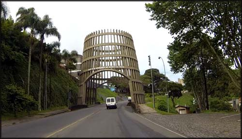Portal de entrada de Bento Gonçalves, um barril de vinho
Fui bem atendido desde que cheguei, um senhor começou a enumerar o tipo de quarto e os preços: R$ 79,00 o quarto standart, R$ 89,00 o quarto com banheira... Não, pode parar, o meu é esse de R$ 79,00, só quero um lugar para dormir.
Retirei as bagagens da moto e o gerente do hotel me ajudou a carregar. Levei a motoca para o estacionamento na rua de trás, subi, pendurei tudo que tinha que secar, tomei um bom banho, e fui dar uma volta.
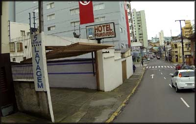Entrada do estacionamento do Hotel Primavera
Andei por algumas ruas, mas uma chuva leve desanimava o turismo. Resolvi jantar, e procurei algum lugar bacana, mas por vários quarteirões não vi muita opção, tinha muita coisa fechada.
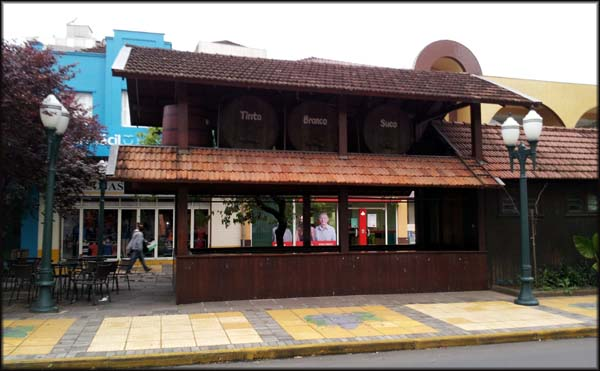Achei o turismo chatinho. Mas também estava chovendo e era dia de semana, talvez seja mais legal em temporada.
Acabei encontrando uma lanchonete em frente a um shopping: Janda di Giacomelli. Pedi um bife a parmeggiana e bebi três cervejas, deu R$ 32,00. O prato que escolhi era bacana, mas a qualidade da carne era bem ruim, e não gostei muito, não recomendo. A cozinheira fez milagre no tempero que estava ótimo, mas a qualidade da carne era sofrível.
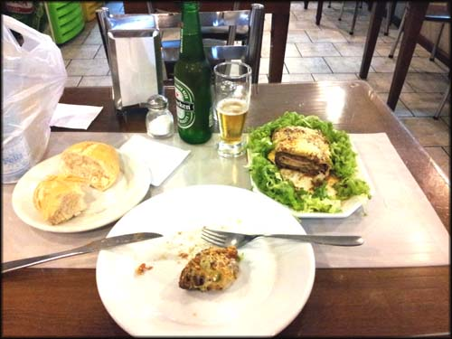Janta no Janda di Giacomelli
Tentei conhecer um pouco mais da cidade, mas não me inspirei, não era o tipo de lugar que eu queria estar naquele momento, talvez em outra oportunidade. Voltei pro hotel para ajeitar melhor as coisas, e dormi. No dia seguinte sabia que iria precisar de disposição para percorrer a maior quilometragem possível.